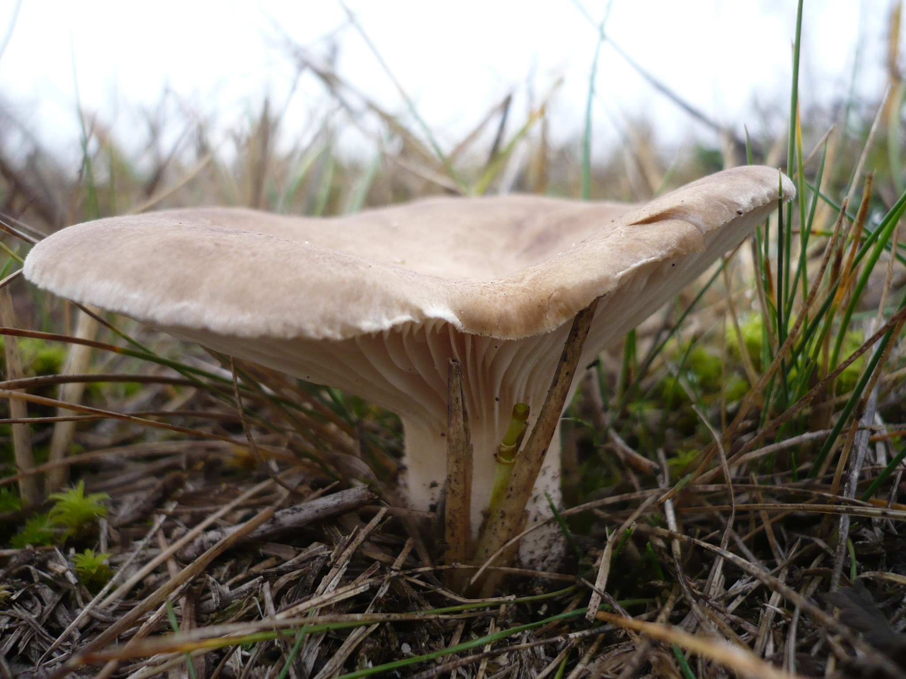

King Oyster
Specimen ID: OMA-004
Scientific Name: Pleurotus eryngii
Habitat: Temperate regions
Growth Rate: Very slow but faster towards the end of its life cycle
Edibility: Edible
Color Notes: Mostly grayish brown
Field Notes
Slow colonizer with explosive final fruiting cycles. Often observed in cool, dry temperate grasslands and open Mediterranean steppes.